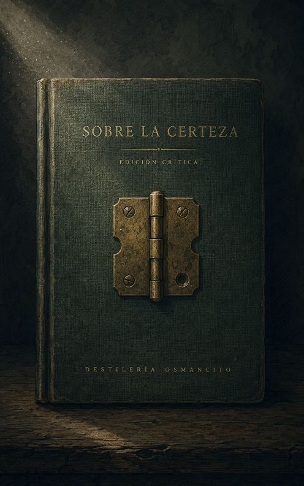
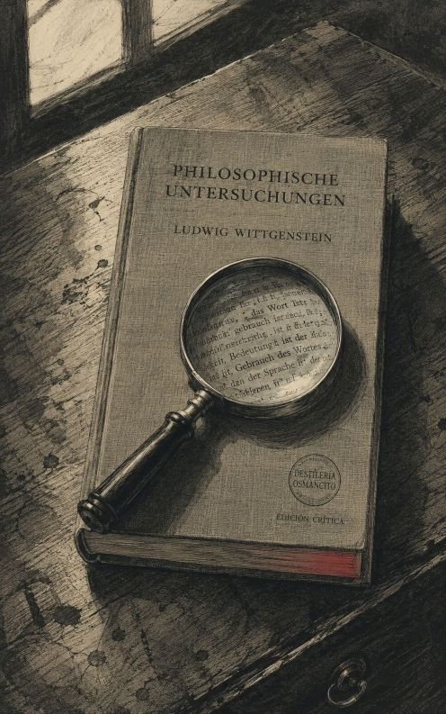
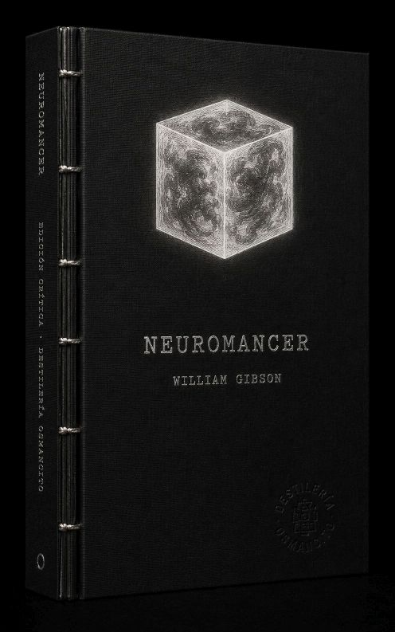
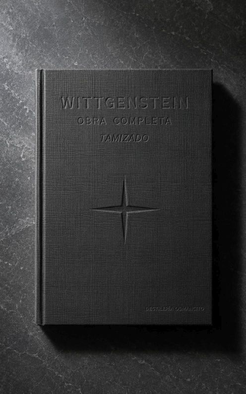
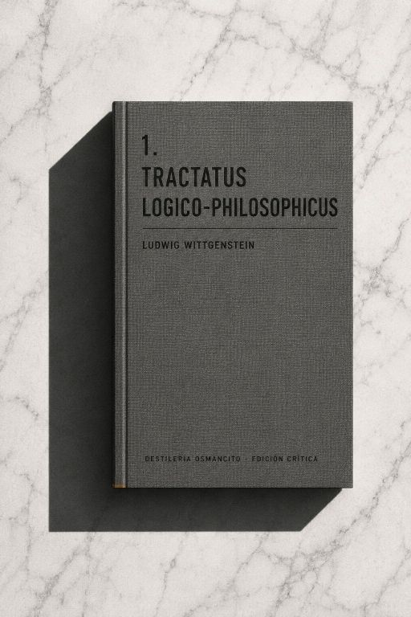

Destilados
Inventario de corpus procesados.

Sobre la certeza (1969)
Esto no es un tratado: es un cuaderno de trabajo que se volvió libro porque su autor murió.

Investigaciones filosóficas (1953)
Recibir estas páginas es recibir una advertencia: no un resumen, sino un sedimento.

Neuromancer (1984)
Llega con la temperatura de una superficie de acero a las tres de la madrugada.

Flota Wittgenstein (1921–1980)
El pulido es casi siempre la señal de que algo se ha traicionado.

Tractatus Logico-Philosophicus (1921)
Llega como un objeto matemático: numerado, frío, con la precisión de quien no tiene prisa.

Moby-Dick (1851)
Un libro que no se puede abrir sin que algo se abra adentro de quien lo abre.

Paraíso Perdido (1667)
Un cosmos entero cargado en diez libros: no llega como libro sino como arquitectura.

Anochecer (1941)
Un corpus que llega como cuenta regresiva: ya desde la primera frase el tiempo se está acabando.

Anochecer (1990)
Un mundo que nunca conoció la noche descubre que la oscuridad no es ausencia: es la verdad que destruye.

El hombre del Bicentenario (1976)
Algo en este corpus espera. Lleva doscientos años esperando. Y la espera tiene nombre propio.

La Iglesia de Planta Centralizada (2021)
Un texto que no tiembla. Frío, luminoso, geométrico — y debajo, algo que arde.

La Lista del Juez (2021)
Lacy Stoltz, investigadora de conducta judicial. Jeri Crosby, veinte años acechando al asesino de su padre.

La Perspectiva como Forma Simbólica (1927)
Un libro que pesa más de lo que mide, con el tacto frío de algo construido para durar.

Gödel, Escher, Bach (1979)
Llega como un sistema que se describe a sí mismo mientras se construye.

Isaac Asimov — Obra completa (1939–1996)
El sistema más grande de la ciencia ficción del siglo XX y la pregunta que no se atrevió a formular.

Alicia · Espejo · Snark (1865–1876)
El corpus que descubrió que el lenguaje nunca es neutral y lo dijo con la voz de una niña de siete años.

Anna Karénina (1877)
Dos vidas paralelas: una que se destruye por amor y otra que aprende a vivir sin teoría.

El Puente Sobre el Río Kwai (1952)
El ingenio humano floreciendo en el horror más absoluto.

El Cosmere (2005–2024)
Sistemas de magia lógica y mundos entrelazados en una arquitectura épica.

El Planeta de los Simios (1963)
La razón clasificada como bestialidad por quien tiene el poder de clasificar.

La Historia de la Filosofía (1926)
Once retratos de pensadores que buscaron la sabiduría como forma de vida.

Nuestra Herencia Oriental (1935)
Monumental crónica del inicio de la civilización: desde el Cercano Oriente hasta Extremo Oriente.
Sobre la certeza (1969)
Esto no es un tratado: es un cuaderno de trabajo que se volvió libro porque su autor murió.
Epítome — Investigaciones filosóficas (1953)
Recibir estas páginas es recibir una advertencia: no un resumen, sino un sedimento.
Neuromancer (1984)
Llega con la temperatura de una superficie de acero a las tres de la madrugada.
Flota Wittgenstein (1921-1980)
El pulido es casi siempre la señal de que algo se ha traicionado.
Tractatus Logico-Philosophicus (1921)
Llega como un objeto matemático: numerado, frío, con la precisión de quien no tiene prisa.
Moby-Dick; or, The Whale (1851)
Un libro que no se puede abrir sin que algo se abra adentro de quien lo abre.
Paradise Lost (1667)
Un cosmos entero cargado en diez libros: no llega como libro sino como arquitectura.
Anochecer (1941)
Un corpus que llega como cuenta regresiva: ya desde la primera frase el tiempo se está acabando.
Anochecer (1990)
Un mundo que nunca conoció la noche descubre que la oscuridad no es ausencia: es la verdad que destruye.
El hombre del Bicentenario (1976)
Algo en este corpus espera. Lleva doscientos años esperando. Y la espera tiene nombre propio.
La Iglesia de Planta Centralizada y el Renacimiento
Un texto que no tiembla. Frío, luminoso, geométrico — y debajo, algo que arde.
La Lista del Juez (2021)
Lacy Stoltz, investigadora de conducta judicial, y Jeri Crosby, hija obsesionada que durante veinte años acechó al asesino de su padre.
La Perspectiva como Forma Simbólica (1927)
Un libro que pesa más de lo que mide, con el tacto frío de algo que fue construido para durar.
Gödel, Escher, Bach: un eterno y grácil bucle (1979)
Llega como un sistema que se describe a sí mismo mientras se construye.
Isaac Asimov — Obra completa (1939–1996)
El sistema más grande de la ciencia ficción del siglo XX y la pregunta que no se atrevió a formular.
Alicia en el País de las Maravillas · A través del Espejo · La Caza del Snark (1865–1876)
El corpus que descubrió que el lenguaje nunca es neutral y lo dijo con la voz de una niña de siete años.
Anna Karénina (1877)
Dos vidas paralelas: una que se destruye por amor y otra que aprende a vivir sin teoría. El corpus más largo que ha entrado en la Destilería. 880 páginas. Una sola vela al final.
El Puente Sobre el Río Kwai (1952)
El ingenio humano floreciendo en el horror más absoluto. Prisioneros que construyen su propia trampa de dignidad y derrota.
El Cosmere (2005-2024)
Sistemas de magia lógica y mundos vastos entrelazados en una arquitectura épica, donde el honor y la redención forjan leyendas.
El Planeta de los Simios (1963)
Simios dominan, humanos retroceden: la razón clasificada como bestialidad por quien tiene el poder de clasificar.
La Historia de la Filosofía (1926)
La historia popular de la filosofía occidental: once retratos de pensadores que buscaron la sabiduría como forma de vida.
Nuestra Herencia Oriental (1935)
Monumental crónica del inicio de la civilización: desde el Cercano Oriente hasta Extremo Oriente, entrelazando política, fe, arte y vida cotidiana.
El sistema
Un ecosistema de lectura profunda y destilación de corpus literarios.
Destilería Osmancito es un ecosistema de protocolos para leer corpora. Múltiples instrumentos con lógica interna propia — no un framework, no una metodología uniforme. Cada instrumento opera desde una posición distinta sobre el mismo material.